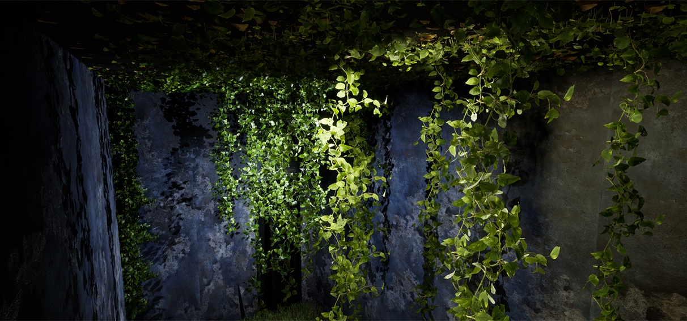

Pierfrancesco Perrone
Composer / Sound Artist
studio sul suono che mi ha attraversato
-
The Red Shoes
Coreographer Philippe Kratz - Music Pierfrancesco Perrone2023 - 61' - Nuovo Balletto di Toscana - Dir. Cristina Bozzolini - Lights Giulia Pastore - Plot Sarah Stroebele - Costume Grace Lyell
Video by Emma Scarafiotti
-
Il Cielo di Carta
Multi-Sensorial Interactive Installation, Milan Design Week 2023, 24 Microphones and 36 SpeakersUn immersivo percorso multi sensoriale oniro-naturalistico.
Uno spazio notturno sospeso nel tempo, una stanza dove si incontrano la natura, la notte e le stelle. Un abbraccio multisensoriale come quello che riceviamo dalla natura e dalle cose che amiamo. Andare oltre il confine delle mura rendendole vive.
Un paesaggio sonoro naturalistico generativo che viene stimolato dall'interazione degli spettatori tramite l'interazione con tutte le superfici della stanza.

-
The Loop
Tape Loop tracksA selection of 4 ambient tape-loops
-
Mixes for Cash
A selection of music made for...
-
Info
contatti:
pierfrancescoaudio@gmail.com
www.soundcloud.com/pierfrancescoperrone
@pierfrancescoperrone
-
Music
A selection of music
-
Symphonia Inefficientiae - La sinfonia dell'Inefficienza
Nel tumulto frenetico del mondo moderno, la musica è un richiamo all'arte di perdersi nei dettagli, nel tempo "sprecato", nelle esperienze che non possono essere misurate in termini di produttività. È un inno all'importanza di fermarsi e ascoltare il canto degli uccelli, di abbandonarsi al piacere di una conversazione senza scopo, di immergersi nell'arte senza preoccuparsi del tempo. Questa lotta all'efficienza insignificante è una rivoluzione contro l'idea che tutto debba essere ottimizzato, misurato e valutato secondo parametri astratti. La musica dell'inefficienza celebra l'arte di essere umani, di commettere errori, di cercare la bellezza nella casualità, di creare spazi per la creatività, la contemplazione e l'immaginazione.